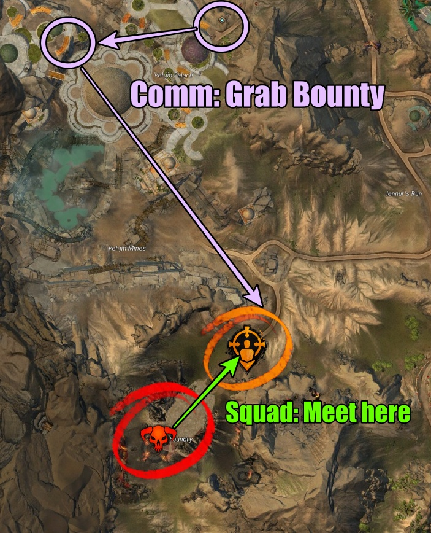
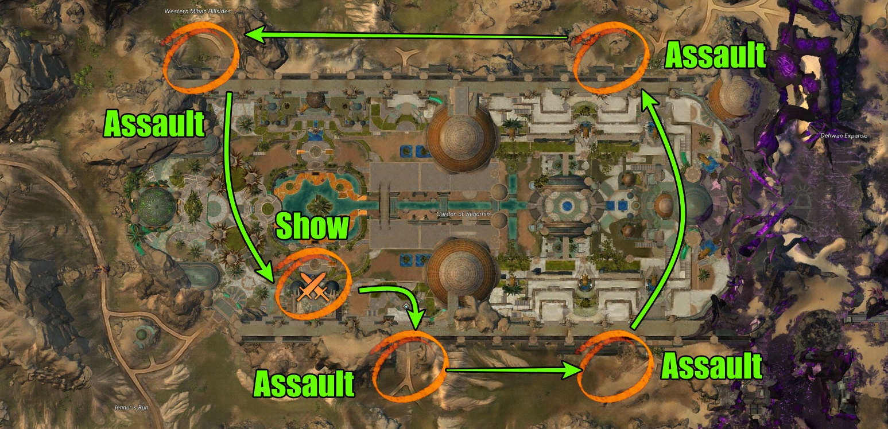

How to:
This farm is 1 hour of events and some bounties. This farm does not include Serpents' Ire as it takes too long for little reward. The schedule goes as the following:
- Forged with Fire meta
- Legendary Forged bounty
- Any of the recommended Branded events
- Forged bounties to fill in between the gaps (Wildhound, Trailblazier)
Overview:
This farm does require at least 15+ people to work. Around 25 is very ideal to spawn champions to spawn for the Branded events. Having at least decent DPS is very recommended as there will be bounties along the way.
By starting the train with Forged with Fire, it will begin at XX:00 at whatever time you decide to run the train. I make sure to pick a time that does not include Serpents' Ire in the same hour as that will reduce the amount of peeps asking for it (I feel bad saying no). The meta should take around 10 minutes or less to complete, espically with a decent size squad. After the meta, take the squad outside of the enterence of the meta and quickly grab the Legendary Forged bounty at Vehjin Palace Waypoint [&BO0KAAA=].

The Legendary bounty respawns every 30 minutes after defeat. I've listed the timer on the timer page. If there is a bounty train, don't bother. This particular bounty is great because it gives Elegy Moasics and is an easy Forge kill.
After the legendary bounty, there are 4 events that need to looked out for. These are the Branded events. We'll call them Assaults. While there are 4 seperate Assaults, they are all connected by their respawn time. There are certain combinations of Assault events as well. It could either be:
2 - Destroying crystals and some branded (cannot upscale)
1 - Branded waves (upscales)
1 - Branded champion
or
2 - Branded waves (upscales)
1 - Destroying crystals and some branded (cannot upscale)
1 - Branded champion

Once all 4 have been completed, all will begin the same respawn timer and spawn at the same time. I prefer to go counterclockwise to each event, but it doesn't matter too much. If by chance we finish the 4 Branded events and get the branded Show event, then it feels smoother. The Show event is a very easy events with 8 waves of Branded mobs. This can also upscale to champions. Both of these have relatively low cooldown so make sure to set their timers.
Afterwards, you'll be doing the same rotation of events of whatever is up. Any Forged bounties that are listed above, the legendary Forged bounty, and these 5 Branded events.